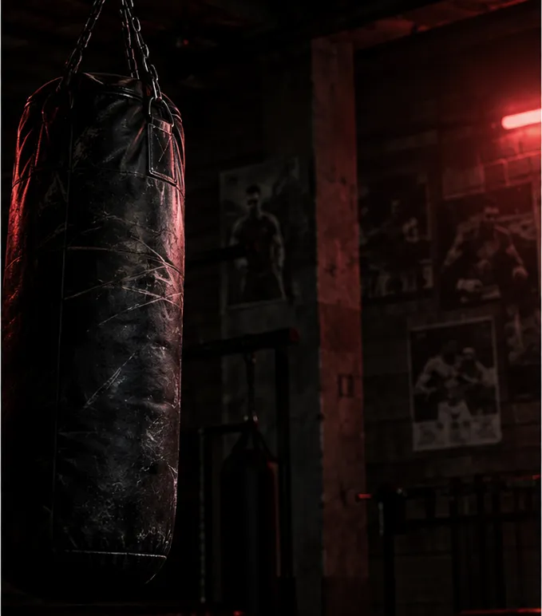

Entrenar
Tu perfil
Tipo de sesión
Tu sesión
Empezar
R1
Asalto 1/1
Asalto
0:00
Combinación
Golpe
Defensa
Pies
Pausa
Parar
Teclado: espacio = pausa · Esc = parar
Menú
✕
Personalizar sesión
Mis combinaciones
Ajustes
Guía
Aprende
la técnica

Log
Tu
progreso
Yo
Tu
estilo
Boxeo
Entrenar
Aprende
Historial